Resumo em 30 segundos
- O problema
- Peças são aprovadas pelo WhatsApp e por e-mail, e ninguém tem certeza de qual versão vale nem de quem aprovou.
- O que descobri
- Avisar que a peça mudou não basta. Mesmo com o aviso na tela, 4 de 5 pessoas não sabiam se a aprovação antiga continuava valendo.
- O que propus
- Revisão por link sem precisar criar conta, comentário no ponto exato da peça, comprovante de aprovação e uma regra clara: a aprovação vale só para a versão aprovada.
Contexto
Por que esse problema
Conheço esse problema de perto pela direção de arte: a peça vai pelo WhatsApp, volta com "muda a cor ali" e vira "final_v3_AGORAVAI.png".
E não é só impressão. Num estudo com 1.034 profissionais de marketing e de agências de vários países:
- 5 rodadasem média até uma ideia ser aprovada. Em 2007 eram 3
- 43%das agências dizem que quem aprova são as pessoas certas
- 30%das agências recebem feedback claro do cliente
No Brasil, essa conversa acontece no WhatsApp: 97% dos usuários abrem o app todo dia, e 82% já falaram com empresas por ele.
O caminho da pesquisa, em 4 passos
- O que eu achava"O cliente brasileiro só aprova pelo WhatsApp."
- EntrevistasO canal muda de cliente para cliente. Eu estava só meio certa.
- Teste do protótipoO aviso de mudança estava na tela, e mesmo assim 4 de 5 ficaram em dúvida.
- A descobertaNão basta dizer que a peça mudou. É preciso dizer o que acontece com a aprovação.
Etapa 1
Conversei com quem envia e com quem aprova
Entrevistei 5 pessoas dos dois lados: uma designer de agência, um designer freelancer, uma profissional de atendimento, um gerente de marketing e uma coordenadora de comunicação. Pedi para cada uma contar, do começo ao fim, a última peça que aprovou ou mandou aprovar.
As 5 conversas mostraram os mesmos quatro problemas:
- O feedback chega espalhadoWhatsApp, e-mail, áudio, ligação, reunião. Na agência, alguém vira tradutor: "Meu trabalho é reunir tudo e transformar em uma solicitação que a criação consiga entender."
- Ninguém sabe qual versão valeA "final" é adivinhada pelo nome do arquivo ou pela última mensagem. Já custou caro: uma peça saiu com o preço antigo.
- Não está claro quem dá a palavra finalOutra pessoa muda o que já tinha sido aprovado: "Fizemos duas versões sem saber qual orientação seguir."
- Ferramentas são abandonadasQuando o cliente precisa criar conta para aprovar, ele volta para a mensagem.
Etapa 2
Olhei o que já existe
Antes de desenhar, vi como duas ferramentas conhecidas de aprovação, o Filestage e o Frame.io, resolvem isso. Li a documentação de ajuda pública das duas.
| O que eu procurei | Filestage | Frame.io | Aprova |
|---|---|---|---|
| Cliente revisa sem criar conta | Sim | Sim | Sim |
| Explica o que acontece com a aprovação quando sobe uma versão nova | Não encontrei na documentação | Não encontrei na documentação | Sim, é o foco |
Ou seja: aprovar sem criar conta não seria diferencial, porque as duas já fazem. O espaço livre era deixar claro o que vale quando a peça muda.
O desafio
Como saber qual versão foi aprovada, e por quem?
E de um jeito que o cliente consiga aprovar direto na peça, por um link, sem criar conta. Para a primeira versão do app, escolhi o que resolvia os quatro problemas com o menor esforço para o cliente:
Entrou
- Link de revisão sem login, para mandar no WhatsApp e abrir no celular.
- Comentário no ponto exato da peça, guardado na versão em que foi feito.
- Um aprovador definido: outras pessoas comentam, só uma aprova.
- Selo de aprovação com quem aprovou e quando.
- Aviso quando a peça muda depois de aprovada.
Ficou para depois
- Revisão por áreas, como jurídico e comercial.
- Comparar duas versões lado a lado.
- Importar comentários do WhatsApp.
São importantes, mas caras. Antes delas, o app precisava provar que o cliente usa o link.
Etapa 3
Protótipo e teste com 5 pessoas
Montei no Figma um protótipo clicável com 22 telas, ainda em cinza. Foi de propósito: eu queria testar o caminho antes de cuidar do visual.
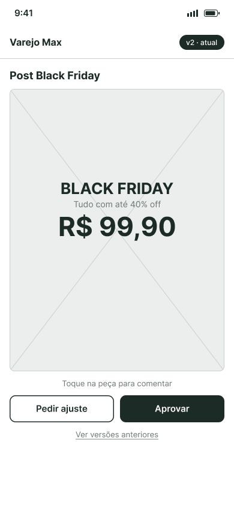
RevisãoO cliente abre o link no celular.
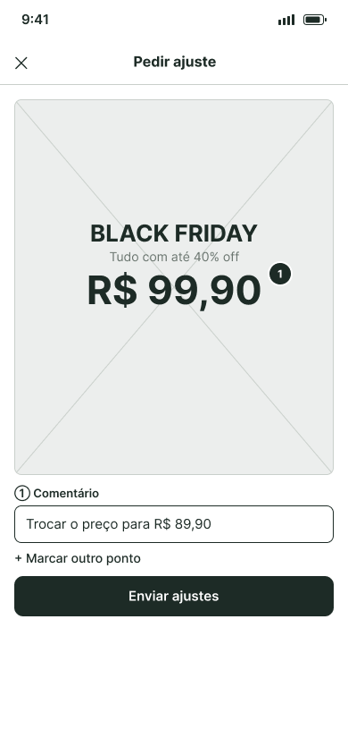
ComentarO pedido fica preso no ponto da peça.
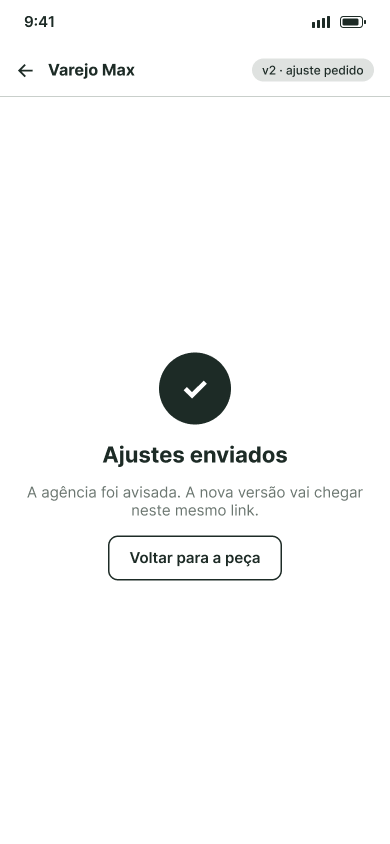
EnviadoA nova versão chega no mesmo link.
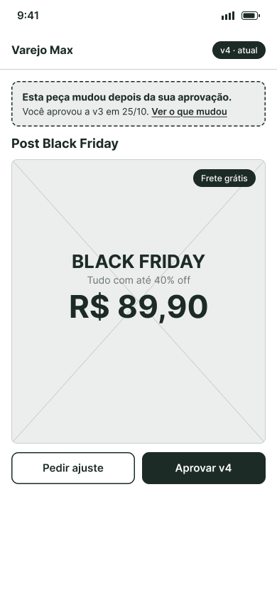
MudouO primeiro aviso de mudança.
Testei com 5 pessoas que não tinham participado das entrevistas: 3 do lado da agência e 2 do lado do cliente. Depois de cada tarefa, a pessoa dava uma nota de 1 a 7 para o quanto foi fácil. A meta era nota média 5 ou mais em todas.
Quão fácil foi cada tarefa
Nota média de 1 (muito difícil) a 7 (muito fácil). A linha tracejada é a meta: 5.
abaixo da metameta: 5
O caminho principal funcionou. As duas notas abaixo da meta caíram no mesmo momento: quando a peça muda depois de aprovada. Os problemas que apareceram:
- 4 de 5não sabiam se a aprovação antiga continuava valendo depois da mudança
- 4 de 5tiveram dificuldade para separar a versão aprovada da versão mais nova
- 2 de 5sentiram falta de uma confirmação clara de que a peça foi aprovada
"O mais confuso foi entender se a aprovação anterior continuava válida depois de uma modificação."Participante do teste, lado do cliente
A descoberta
O aviso de mudança já estava na tela. Faltava dizer o que ele significava para a aprovação.
Solução
O redesenho
O problema não pedia uma função nova. Pedia que a tela dissesse a consequência, e não só o fato. Arraste a barra para comparar o aviso antes e depois do teste.
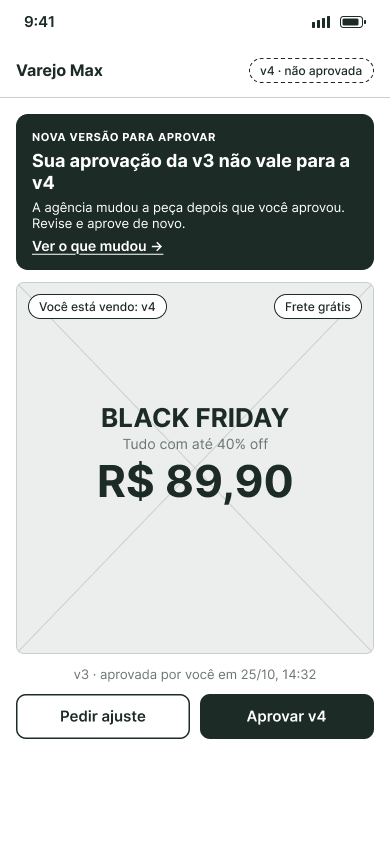
- AntesUma faixa tracejada, com o mesmo peso do resto da tela, dizia que a peça tinha mudado. Não dizia o que fazer.
- DepoisO aviso vira o título da tela e diz a consequência: "Sua aprovação da v3 não vale para a v4. Revise e aprove de novo."
O que mudou
- A tela diz qual versão você está vendo"Você está vendo: v4 · não aprovada" (v4 é a versão 4 da peça), com abas para abrir cada versão.
- As duas versões aparecem juntasA v4 esperando aprovação e a v3 aprovada, com o aviso de que ela "não vale para a v4".
- O histórico virou linha do tempoQuem fez o quê, quando, e o estado de cada versão: atual, aprovada ou substituída.
- A aprovação virou comprovantePeça, versão, quem aprovou, quando e um código. A agência recebe um aviso e pode baixar a versão aprovada.
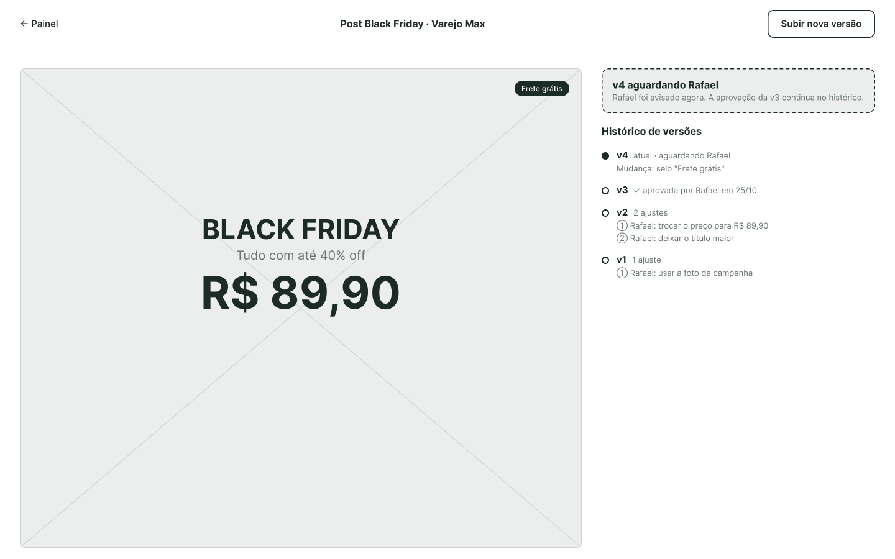
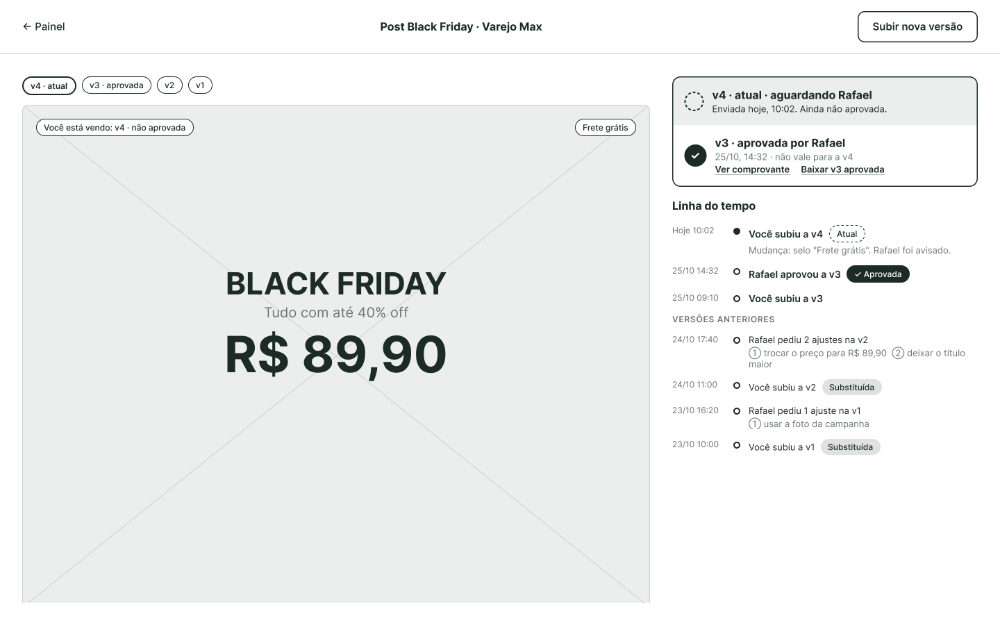
Etapa 4
Como validei sem pessoas novas
Não consegui recrutar pessoas novas para testar de novo. Em vez de pular essa etapa, troquei de método:
- Avaliação heurística: revisei as telas com as heurísticas de Nielsen, uma lista clássica de boas práticas de usabilidade.
- Simulação passo a passo (o nome técnico é percurso cognitivo): refiz as duas tarefas que falharam como se fosse a pessoa usando, na versão antiga e na nova.
- 10problemas na 1ª versão, sendo 1 grave a ponto de impedir o uso
- 5problemas na 2ª versão, depois do redesenho
- 1problema na versão final, só de aparência
Ver os problemas por gravidade
| Gravidade | 1ª versão | 2ª versão | Versão final |
|---|---|---|---|
| Impede o uso | 1 | 0 | 0 |
| Grave | 4 | 1 | 0 |
| Pequeno | 4 | 1 | 0 |
| Só de aparência | 1 | 3 | 1 |
A avaliação achou algo que o teste não mostrou: na 1ª versão, quando uma versão nova subia, o painel continuava dizendo "Aprovada". A agência poderia publicar um arquivo que ninguém aprovou. Era uma situação que eu simplesmente não tinha desenhado.
Ela também achou problemas no próprio redesenho. O principal: com uma versão nova esperando, a agência não conseguia baixar a versão aprovada. Na versão final corrigi isso, deixei cada cor de status com um significado só e ajustei os textos que tinham pouco contraste para leitura.
Interface
O visual final
Com o caminho validado, desenhei a versão final partindo de uma pergunta: o que a cor precisa dizer?
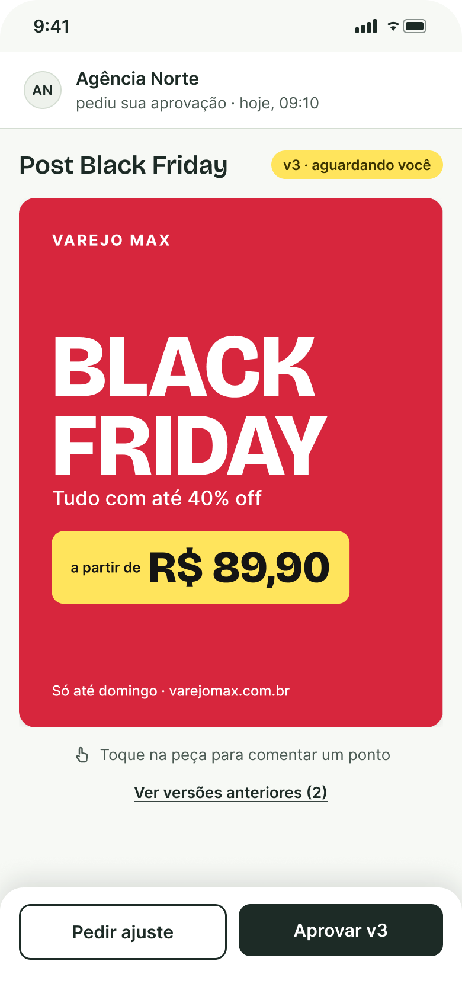
RevisãoA peça em primeiro plano.
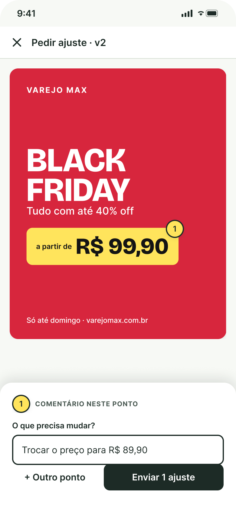
Comentar um pontoUma ação principal: enviar.

Mudou depois de aprovadaO único amarelo forte do app.
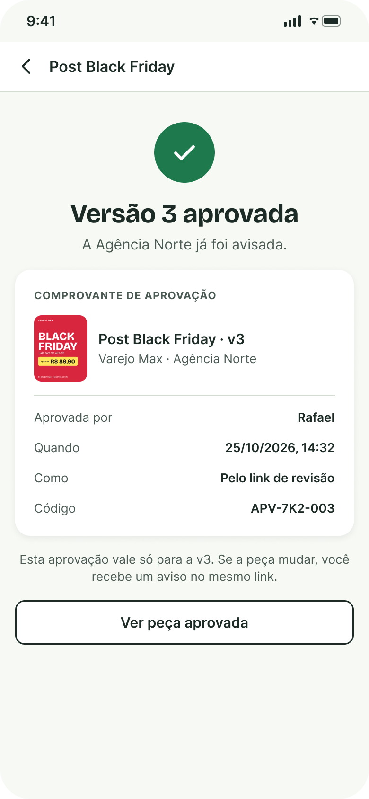
ComprovanteA aprovação fica registrada.
- A peça é a estrela. Quem aprova está ali para olhar a peça, que é o elemento mais colorido da tela. O resto fica em tons neutros e só usa cor quando a cor quer dizer alguma coisa.
- Regra 60-30-10. Cerca de 60% da tela é fundo neutro, 30% é verde-musgo (texto e botão principal) e 10% são destaques. Como o destaque é raro, ele chama atenção.
- Cada cor tem um significado, e nunca aparece sozinha. Verde com ✓ é aprovada; amarelo, alguém precisa agir; tracejado, a vez é do outro lado; cinza, já virou histórico.

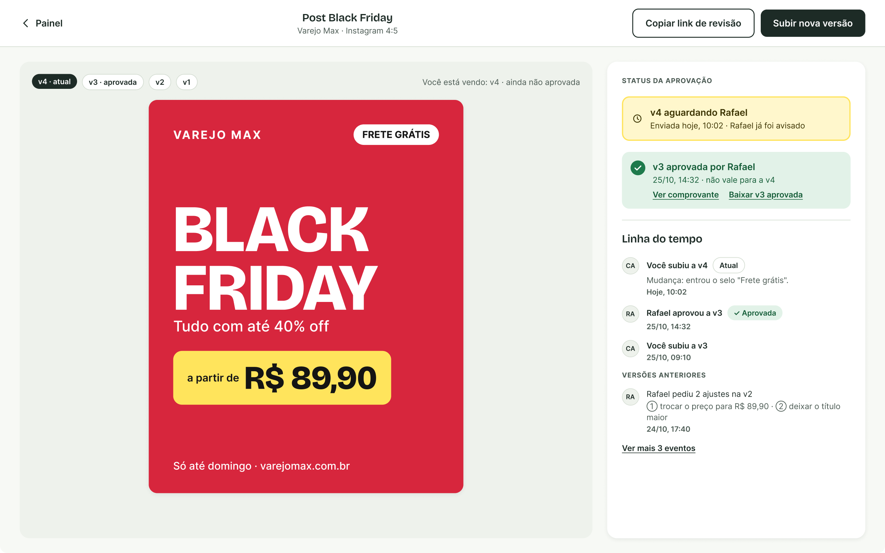
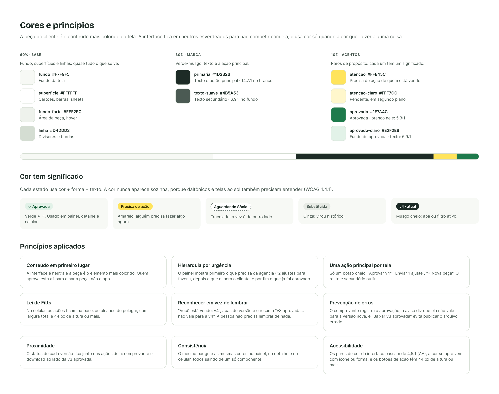
Usei o Claude como assistente para organizar a pesquisa e buscar fontes.
Aprendizados
O que aprendi
Uma informação na tela não é o mesmo que uma informação entendida. O aviso estava lá. Faltava destaque, e faltava dizer o que ele significava.
As situações que ninguém desenha são onde o produto quebra. O painel dizendo "Aprovada" para uma versão que ninguém aprovou nasceu de uma tela que eu não tinha previsto.
Quando não dá para usar o método ideal, troque de método e diga isso. É melhor do que pular a validação ou fingir que ela aconteceu.
Próximos passos
- Testar de novo com 2 ou 3 pessoas novas, só nas duas tarefas que ficaram abaixo da meta. Objetivo: nota 5 ou mais.
- Várias aprovações ao mesmo tempo. Hoje o aviso do painel mostra uma peça só. A próxima versão agruparia: "3 peças aprovadas hoje".
- O que eu mediria depois do lançamento: quantas rodadas de ajuste cada peça leva (o mercado está em 5), quantas aprovações acontecem pelo link e quantos dias passam entre o envio e a aprovação.
Fontes: BetterIdeas Project, 2025 (via AMI) e WFA; pesquisa Opinion Box sobre WhatsApp, 2025 (via Canaltech); documentação de ajuda do Filestage e do Frame.io; fórum do Frame.io. Consultadas em 25/10/2026.